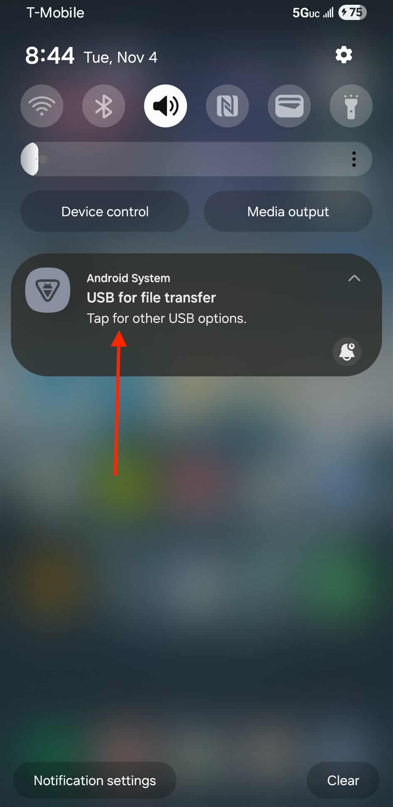
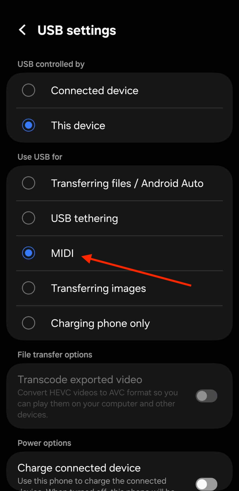

1. Connect phone with a USB data cable and set USB mode to MIDI


Step-by-step guide to connect Sound Pads to your PC over USB MIDI.
Any DAW with MIDI input support should work.
You should hear audio from your PC instrument.